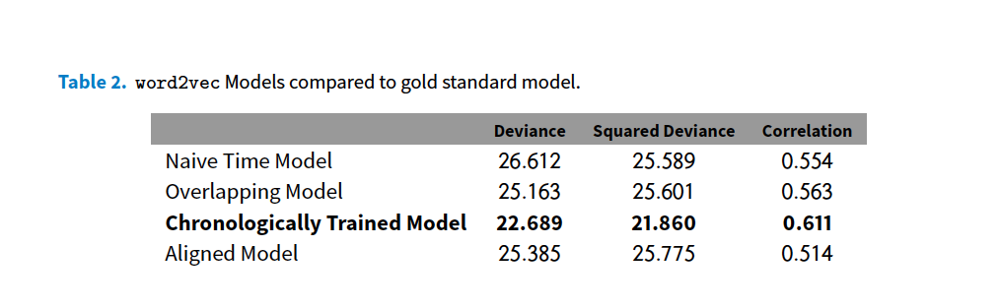
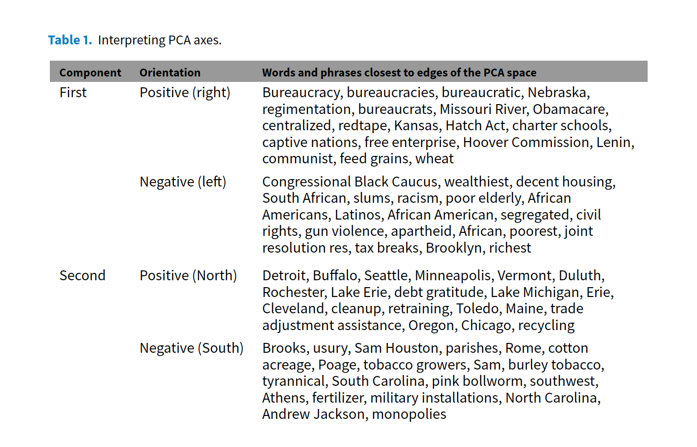
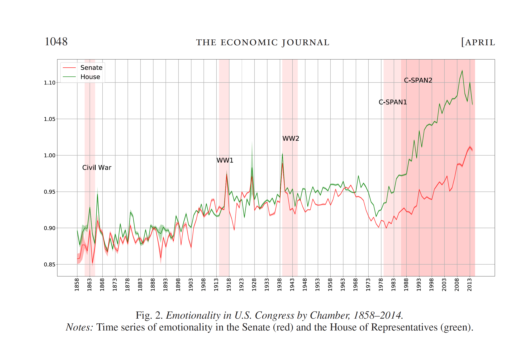

PPOL 6801 - Text as Data - Computational Linguistics
Week 9: Word Embeddings II
Plans for Today:
A quick quizz (as a review exercise) about Word Embeddings
Text as Data applications using Word Embeddings
Coding
Problem set 2!
Word Embeddings Quiz
Explain these three concepts: Self-Supervision, Distributional Hypothesis, Dense Representation.
Put these three concepts together to explain how word vectors can capture meaning of words.
What are the two main strategies to estimate word embeddings? One is named Glove, and the other is named Word2Vec
Are word embeddings still a bag-of-word representation model?
Are word2vec algorithms deep learning?
Are word2vec algorithms unsupervised or supervised learning?
Applications
Decisions when using embeddings, Rodriguez and Spirling, 2022
When using/training embeddings, we face four key decisions:
Window size
Number of dimensions for the embedding matrix
Pre-trained versus locally fit variants
Which algorithm to use?
Findings
popular, easily available pretrained embeddings perform at a level close to—or surpassing—both human coders andmore complicated locally fit models.
GloVe pretrained word embeddings achieve on average—for the set of political queries—80% of human performance and are generally preferred to locally trained embeddings
Larger window size and embeddings are often preferred.
Applications
Let’s discuss now several applications of embeddings on social science papers. These paper show:
How to use embeddings to track semantic changes over time
How to use embeddings to measure emotion in political language.
How to use embeddings to measure gender and ethnic stereotypes
And a favorite of political scientists, how to use embeddings to measure ideology.
How will we make this discussion fun?
I: introduce the paper and the main goals
You: will explain to me how the author use the word embeddings to do so.
Capturing cultural dimensions with embeddings
Austin C. Kozlowski, Austin C., Matt Taddy, and James A. Evans. 2019. “The Geometry of Culture: Analyzing the Meanings of Class through Word Embeddings.” American Sociological Review 84, no. 5: 905–49. https://doi.org/10.1177/0003122419877135.
Word Embeddings can be use to capture cultural dimensions
Dimensions of word embedding vector space models closely correspond to meaningful “cultural dimensions,” such as rich-poor, moral-immoral, and masculine-feminine.
a word vector’s position on these dimensions reflects the word’s respective cultural associations
Your turn: How?
How are the cultural dimensions built?
How associations between words and dimensions are calculated?
How are the result validated?
Results

Results
Semantic changes over time
Rodman, E., 2020. A Timely Intervention: Tracking the Changing Meanings of Political Concepts with Word Vectors. Political Analysis, 28(1), pp.87-111.
Word Vectors allow us to capture semantic meaning
Interesting social science questions hinge on the recognition that meaning changes over time
How can we properly use word to vectors to track changes over time?
Three challenges:
- Arbitrary Cut Points
- Language Instability (same concept != words)
- Spatial Noncomparability (latent spaces are not constants)
Solutions:
- naive time series model (just cut)
- overlapping time series model (just cut and add a t-1)
- chronologically trained model (initialize with global parameters)
- aligned time series method (post-modelling adjustments)
Results

Your turn: How?
How does she uses word2vec?
What is there pipeline to build a golden set?
What is her outcome measure and how she builds it?
Ideological Scaling
Rheault, Ludovic, and Christopher Cochrane. “Word embeddings for the analysis of ideological placement in parliamentary corpora.” Political Analysis 28, no. 1 (2020): 112-133.
Can word vectors be used to produce scaling estimates of ideological placement on political text?
Yes, and word vectors are even better
It captures semantics
No need of training data (self-supervision)
Your turn: How? With a little help.

Other than the a vector for the covariate, what are the other things this model gives you?
Can you get these vectors without having to re-estimate the model?
Results


Measuring Emotion
Gennaro, Gloria, and Elliott Ash. “Emotion and reason in political language.” The Economic Journal 132, no. 643 (2022): 1037-1059.

You turn: How?
What are the seed words for emotion and cognition?
How are word vectors for speech aggregated?
How are word vectors for seed words aggregated?
How do the authors measure emotionality in text?
Gender and ethnic stereotypes
Garg, Nikhil, Londa Schiebinger, Dan Jurafsky and James Zou. 2018. “Word embeddings quantify 100 years of gender and ethnic stereotypes.” Proceedings of the National Academy of Sciences 115(16):E3635–E3644.
Word Embeddings are trained in huge volumes of data
Training data contain stereotypes, for example, in gender and ethnic dimensions.
How can we use word vectors to understand these stereotypes?
Your turn: how?
What are the measures of biases proposed by the author?
What the input here? And the variation over time?